Music Institute of Chicago: Exceeding Your Goals at 95

The Music Institute of Chicago welcomed more than 250 guests to its 95th Anniversary Gala at The Four Seasons Hotel Chicago recently. The event raised more than $1 million, exceeding its fundraising goal, from a combination of ticket sales and corporate, foundation, and individual sponsorships and contributions. Highlights of the evening included the presentation of the David and Dorothy Dushkin Award to Lyric Opera of Chicago, the Cultural Visionary Award for Chicago to Bill Kurtis and Donna La Pietra, and the Richard D. Colburn Award for Teaching Excellence to Marta Aznavoorian.
Gala leadership included Honorary Chair Alexandra C. Nichols and Gala Co-Chairs Carlos R. Cardenas and Shiraz Kotte. The John D. and Alexandra C. Nichols Family Foundation was Patron of the Arts; The Negaunee Foundation was Grand Benefactor; and Edwardson Family Foundation, The Gross Family Fund, J. Thomas Hurvis and Ann Andersen, ITW, Ronald M. Kline–Compass Wealth Design, Sylvia Neil and Dan Fischel, Pritzker Pucker Family Foundation, and Patrick G. and Shirley W. Ryan were Benefactors.
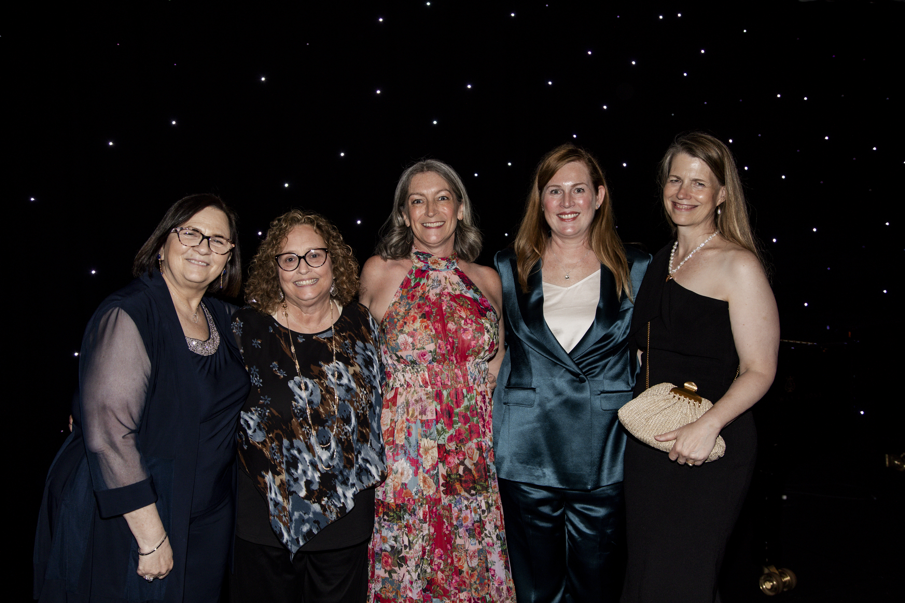
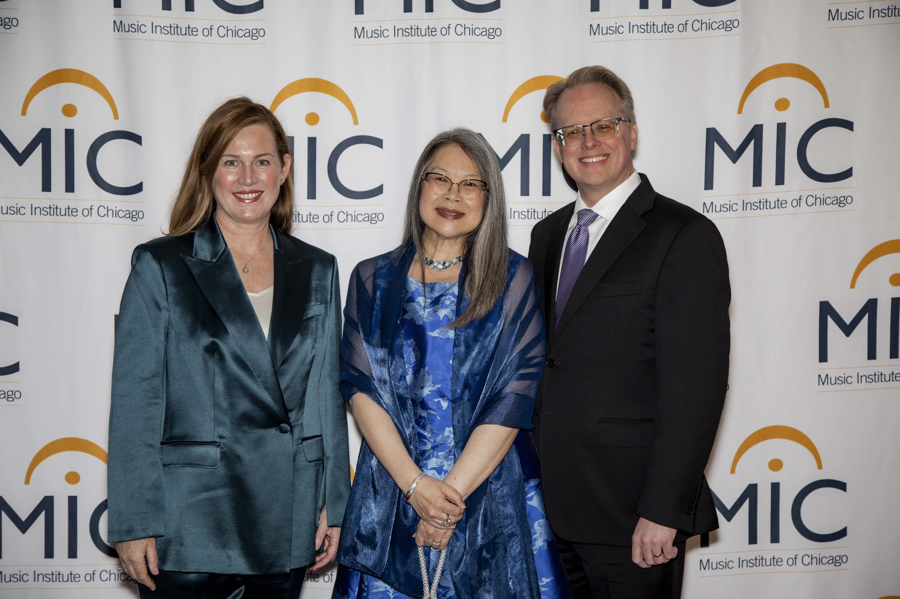
Proceeds from the Gala support excellence in teaching at the Music Institute, upholding a standard and tradition that has evolved and thrived for nearly a century, and provide the single-largest source of funds for scholarships and merit-based aid, tuition-free community engagement, and neighborhood-based service activities. Each year the Music Institute positively impacts thousands of individuals of all ages and backgrounds from more than 100 Illinois communities and scores of Chicago neighborhoods.
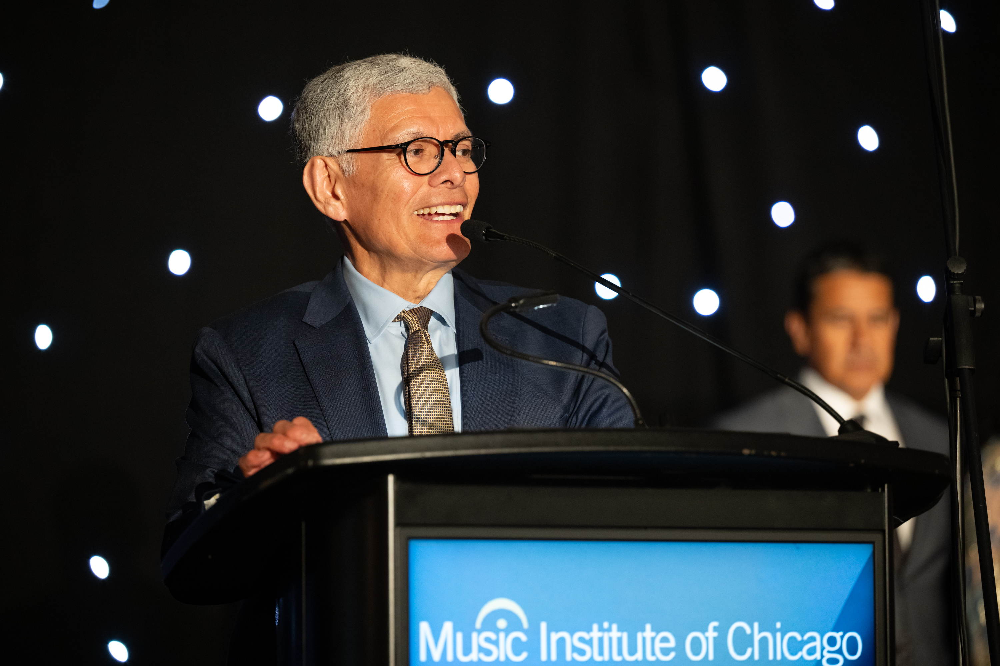
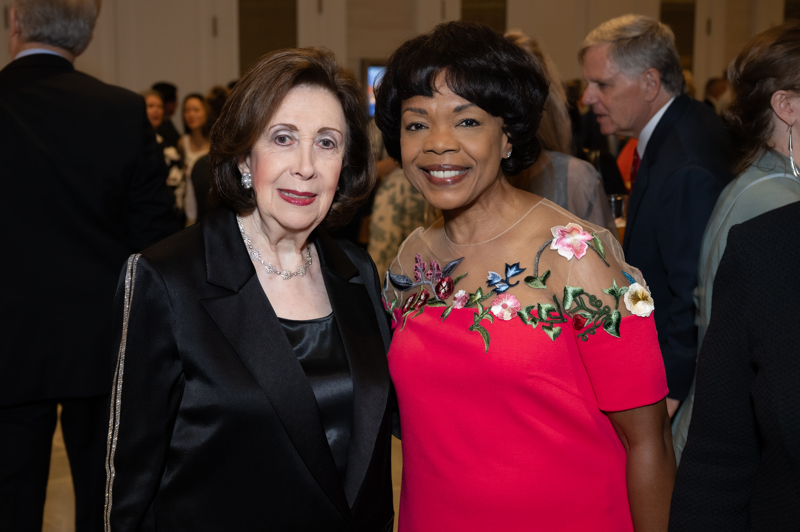
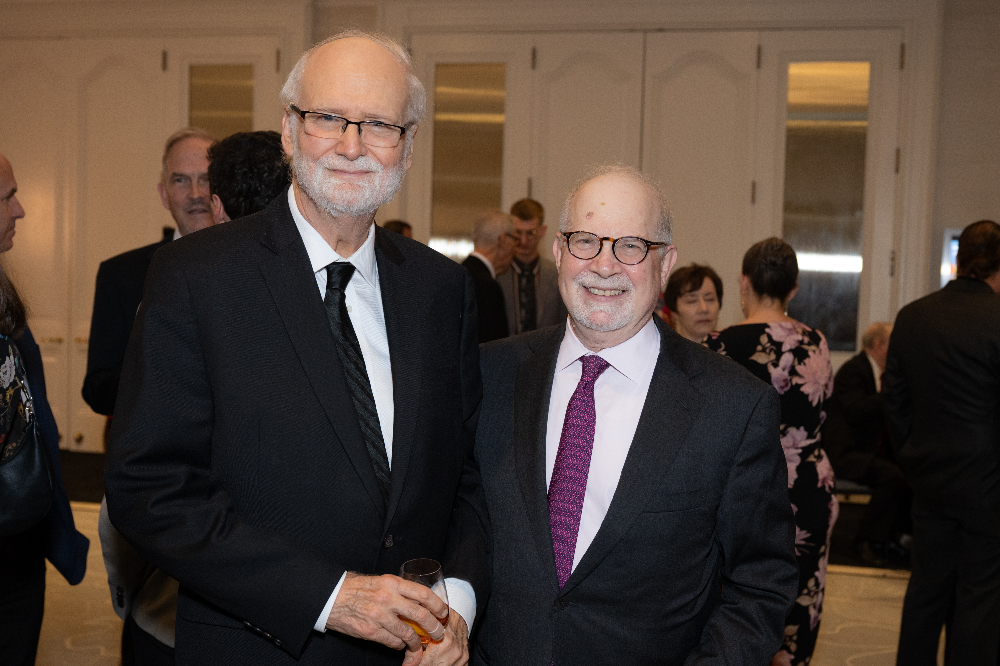
The evening began with a private cocktail reception with music by the Music Institute’s Adult Jazz Ensemble. Guests then entered the ballroom accompanied by a lively processional of traditional Cuban music. Broadcast journalist Phil Ponce served as master of ceremonies welcoming performances by Music Institute students and ensembles, including pianist Anthony Wu, an ensemble of Suzuki string students, pianist Edie Park, the Academy Chamber Orchestra conducted by James Setapen, Tikaani String Quartet, and vocalist Jaiden Hsu with faculty pianist Timothy Mah.

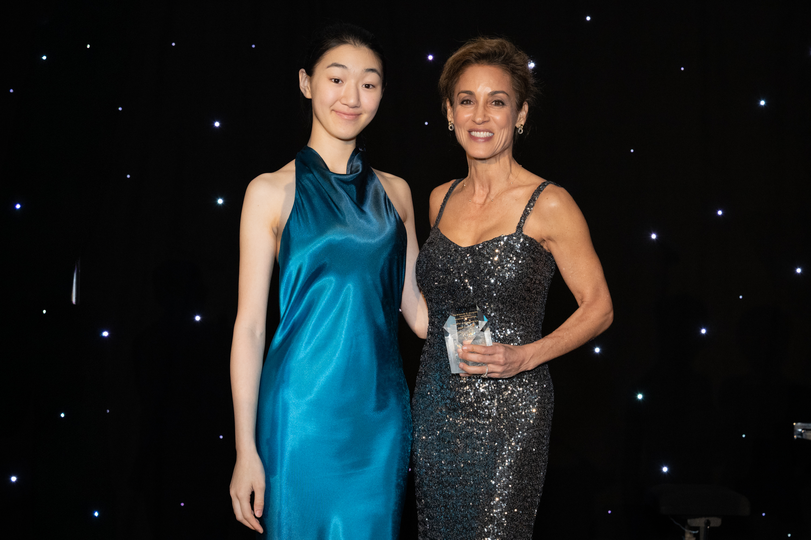
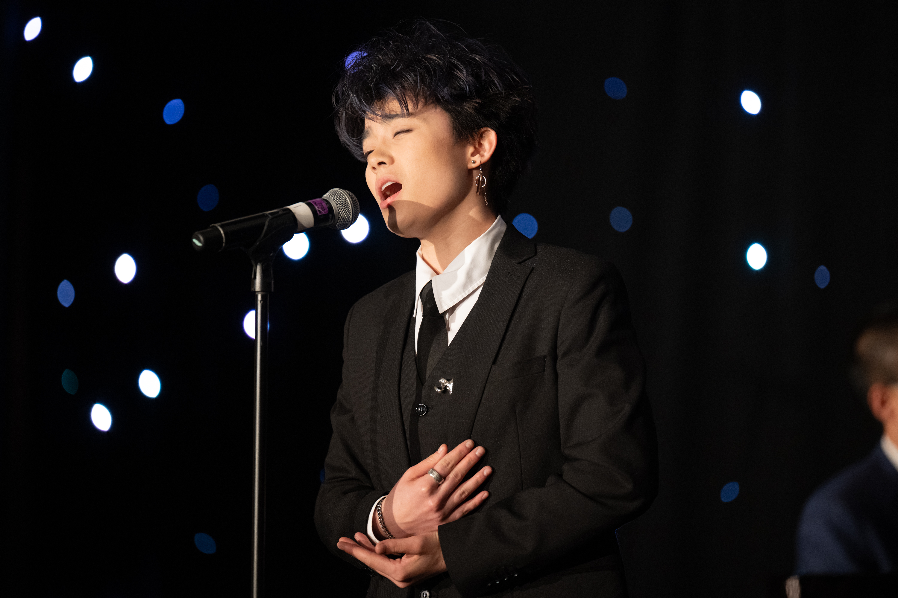
Baritone Finn Sagal and Grammy Award-winning pianist Craig Terry, artists from the Patrick G. and Shirley W. Ryan Opera Center at Lyric Opera of Chicago, also performed.
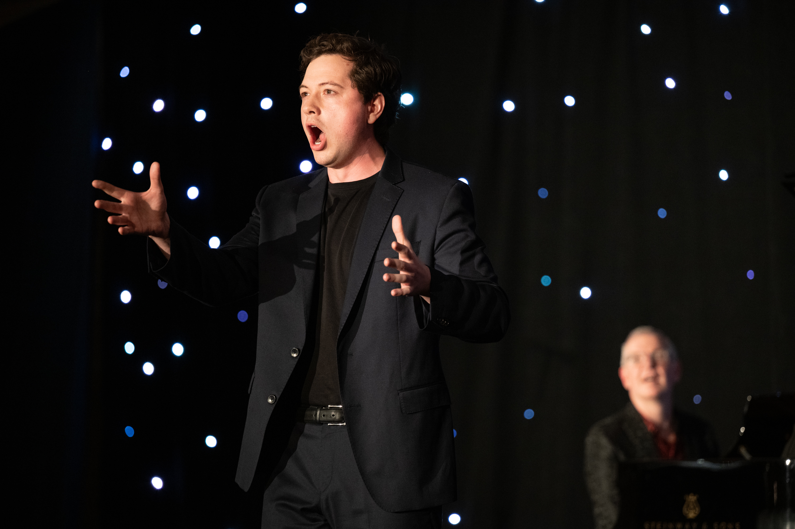
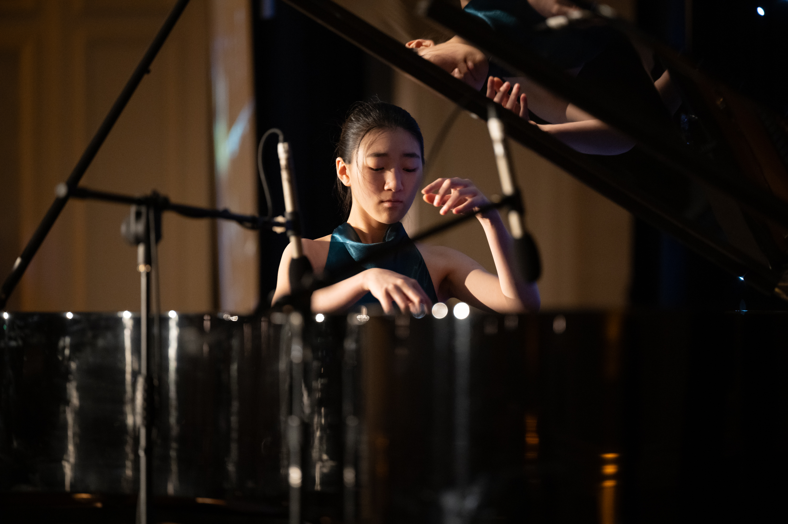
“Music has a unique ability to affect nearly every human being across cultures, ages, and languages. Neuroscience, psychology, anthropology, and everyday life experiences all point to the same idea: music is deeply tied to how humans think, feel, connect, and remember. At MIC, we develop human potential, at every age, through the power of music delivered by our talented and dedicated faculty across multiple campuses. MIC is an important thread in the fabric of the Chicago arts community,” Music Institute President and CEO Shalisa Kline Ugaz said in her keynote.
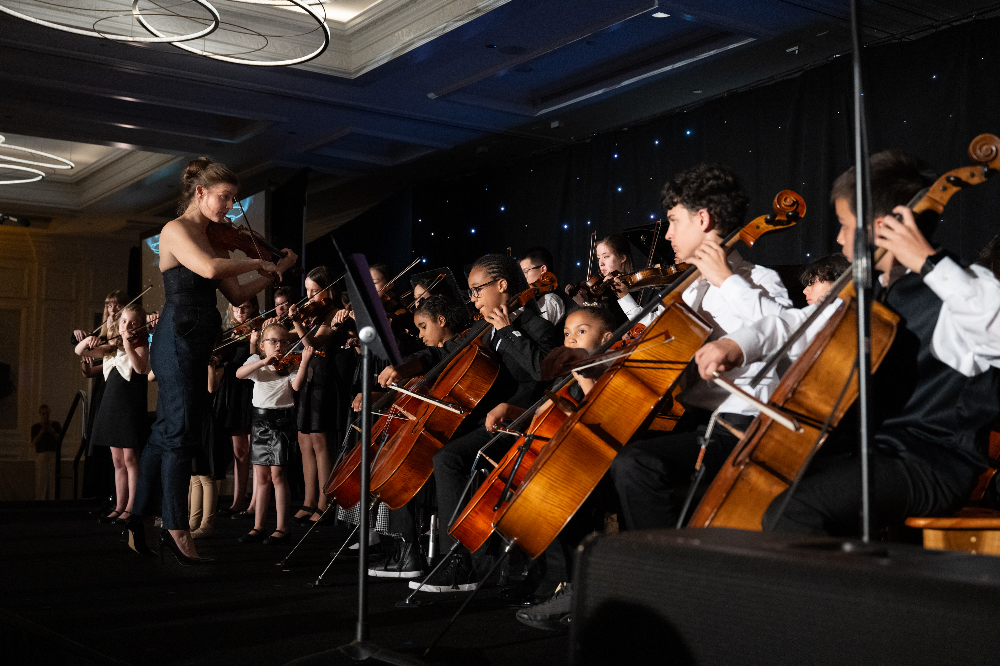
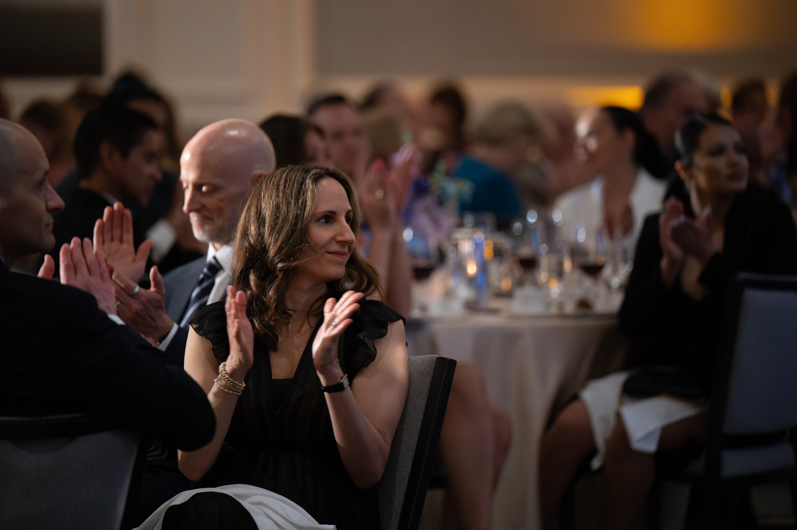
The prestigious David and Dorothy Dushkin Award, established more than 30 years ago and named for the Music Institute’s visionary founders, recognizes international luminaries in the world of music for their contributions to the art form, as well as to the education of youth. Presented by Ugaz, this year’s award honored Lyric Opera of Chicago, the first organization to receive the Dushkin Award. Lyric is committed to redefining what it means to experience great opera. The company is driven to deliver consistently excellent artistry through innovative, relevant, celebratory programming that engages and energizes new and traditional audiences. Lyric also stands committed to training the artists of the future, through The Patrick G. and Shirley W. Ryan Opera Center, and to becoming increasingly diverse across its audiences, staff, programming, and artists—magnifying the welcoming pull of the art form, the company, and the city.
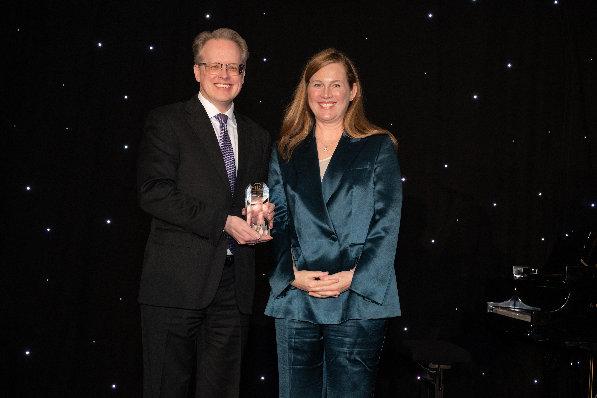
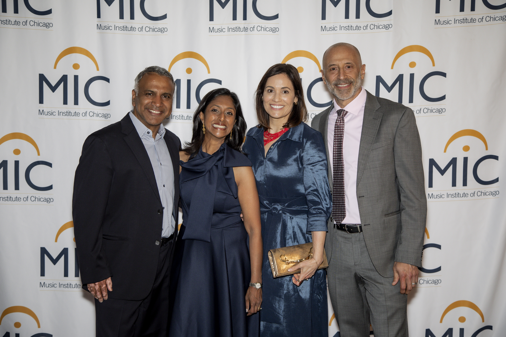
The Cultural Visionary Award for Chicago, presented by Alexandra C. Nichols, recognizes individuals who make an indelible impact on the community through their philanthropic, civic, and cultural leadership. This year’s honorees were the beloved Bill Kurtis and Donna La Pietra. Kurtis is an iconic journalist, broadcaster, and storyteller whose career has shaped American media for more than five decades. After rising to prominence as a trusted anchor in Chicago, he founded Kurtis Productions, creating acclaimed documentary and investigative series, including Cold Case Files and American Justice, and is the author of a new book, Whirlwind: My Life Reporting the News. La Pietra is a creative producer and civic leader whose work bridges media, culture, and philanthropy. A former television and radio executive and longtime leader at Kurtis Productions, she has also played a transformative role in Chicago’s cultural community, shaping major events and initiatives for organizations including the Chicago Public Library Foundation, Millennium Park, and the Joffrey Ballet.
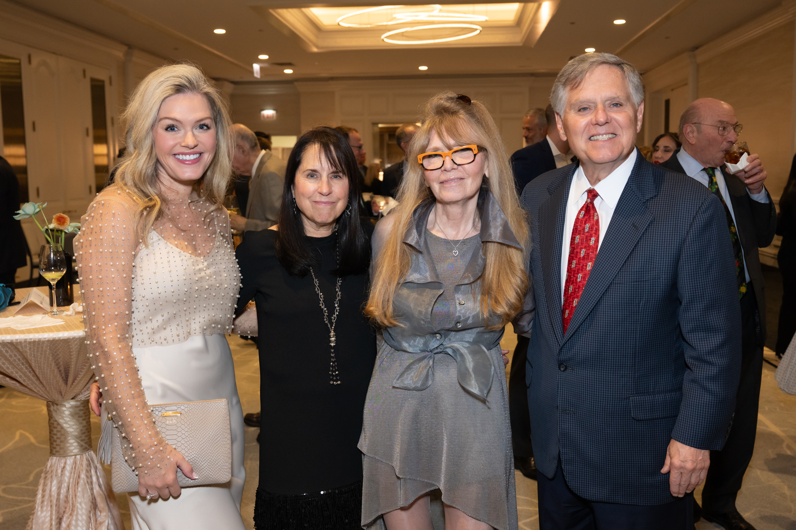
The Music Institute presents the Richard D. Colburn Award for Teaching Excellence to faculty members who exemplify the high standard of excellence set by Richard D. Colburn in his many musical endeavors. Presented by Music Institute student Edie Park, this year’s award went to multi-Grammy-nominated Marta Aznavoorian, a Music Institute alumna, piano faculty, and Artist-in-Residence, who has built an international career as a soloist, chamber musician, and educator and has appeared with major orchestras throughout the U.S. and abroad. A founding member of the Grammy-nominated Lincoln Trio, Aznavoorian has recorded for Cedille Records, including Trios from Our Homelands, Chicago Now, and the critically acclaimed Aznavoorian Duo album Gems from Armenia. She has premiered major new works by leading contemporary composers, including Stacy Garrop’s piano concerto Invictus. An educator at the Music Institute and DePaul University, Aznavoorian fosters the next generation of musicians.
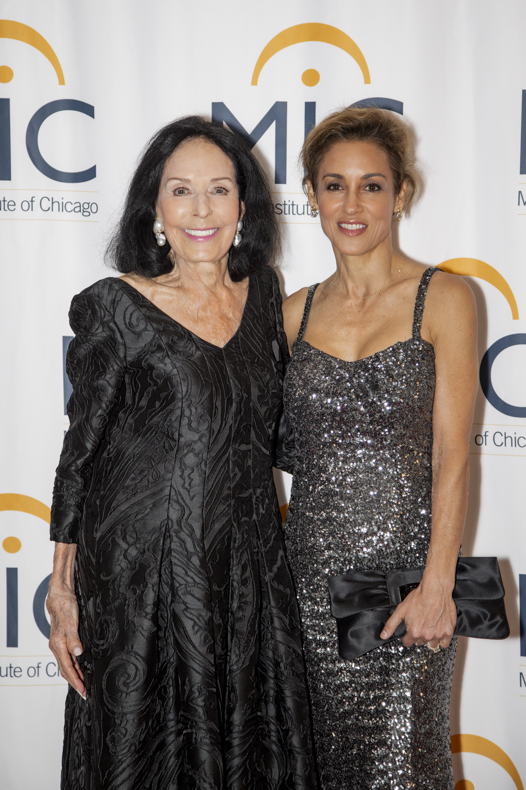
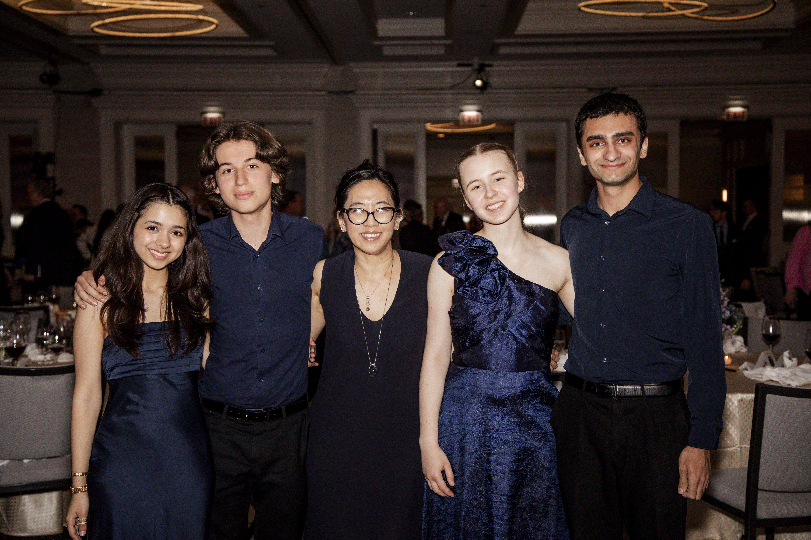
Founded in 1931, the Music Institute of Chicago fosters lifelong engagement with music for people of all ages, backgrounds, and abilities. Through exceptional teaching, outstanding performance opportunities, and community programming, the Music Institute harnesses the power of music to educate and motivate while providing broad access to high-quality music education. Each year, the Music Institute provides personalized music instruction to more than 1,500 students, regardless of age, level of experience, or financial means, across Community Music School locations in Chicago, Downers Grove, Evanston, Lake Forest, and Winnetka, as well as online. The Music Institute also offers scholarship opportunities to students in its Community School and the Academy, a nationally recognized pre-college conservatory program for gifted high school pianists and string players. The Music Institute welcomes more than 15,000 visitors annually for performances, masterclasses, and special events at Nichols Concert Hall.
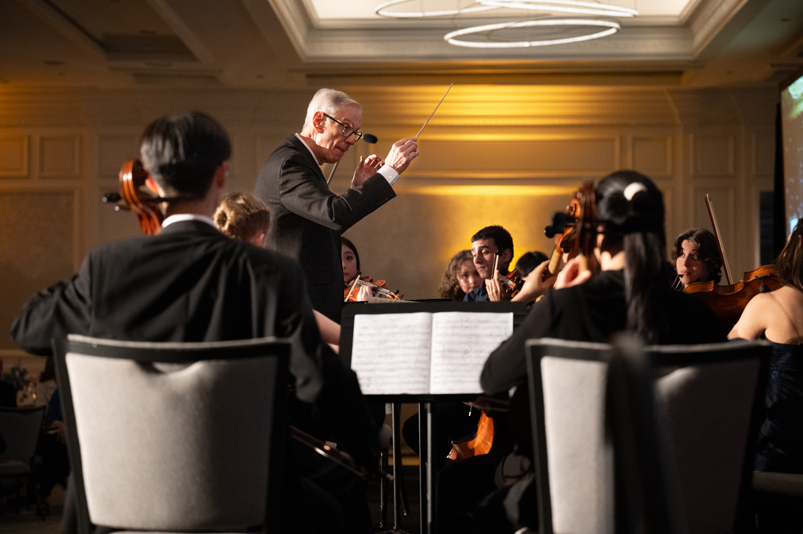
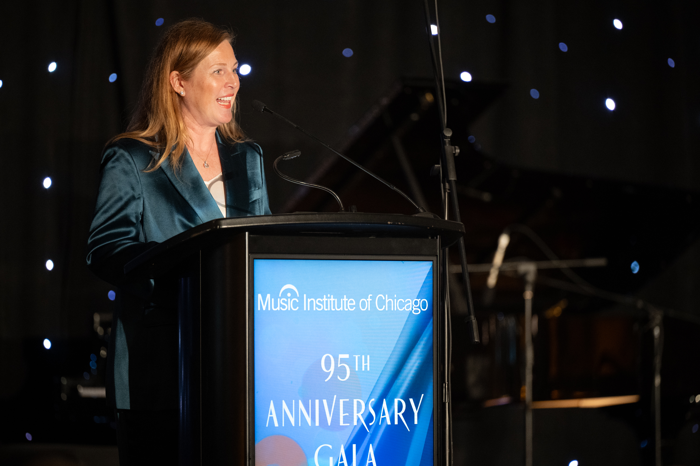
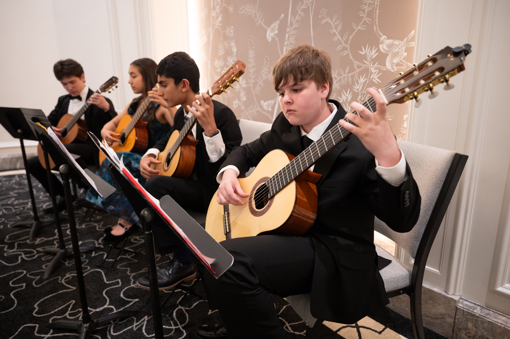
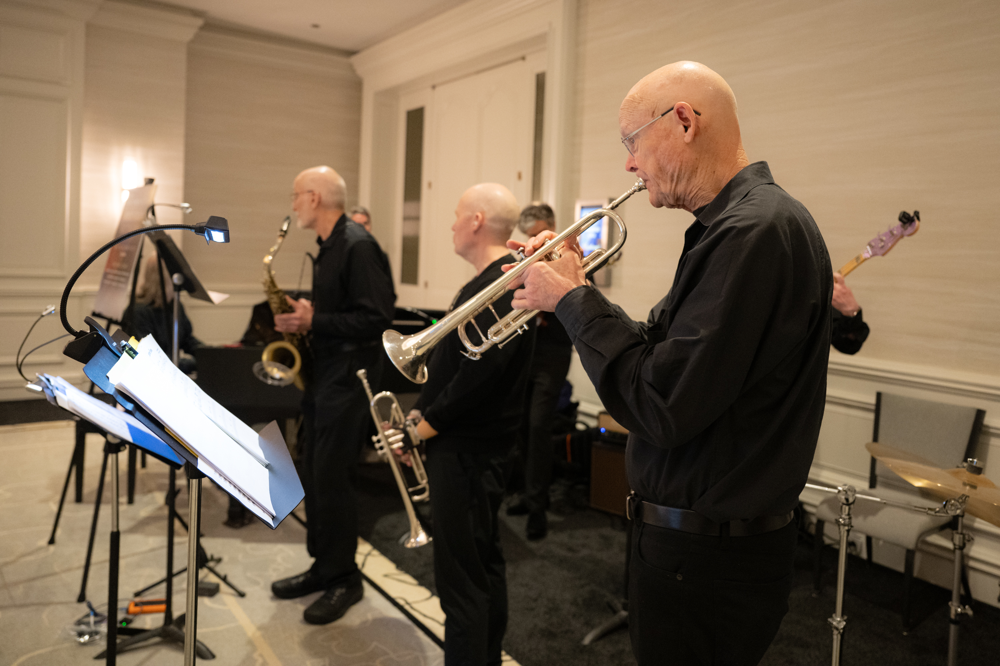
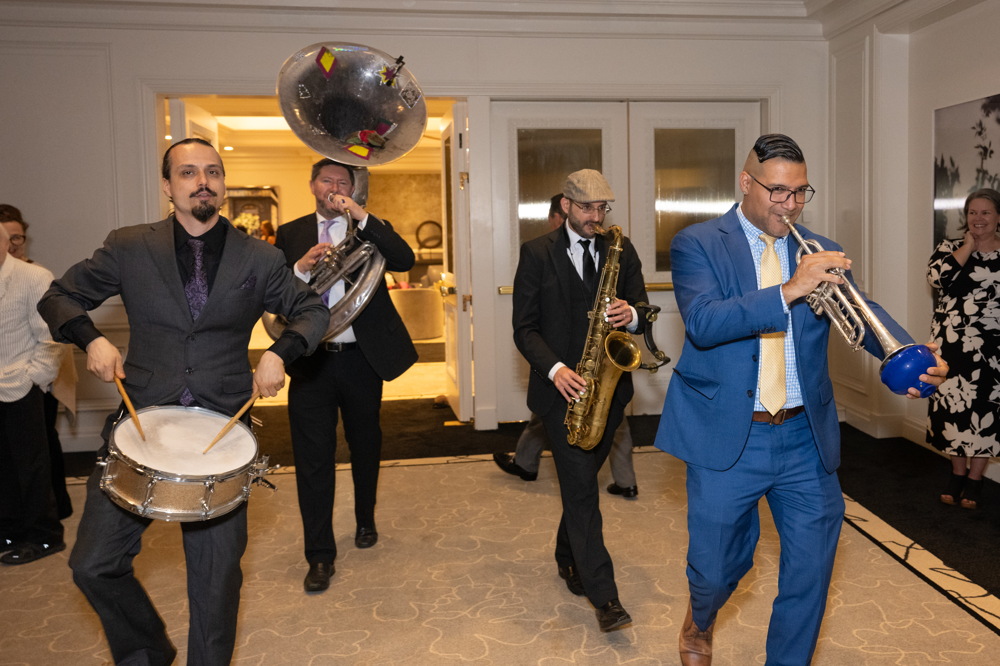
For further information about the Music Institute of Chicago visit: musicinst.org.